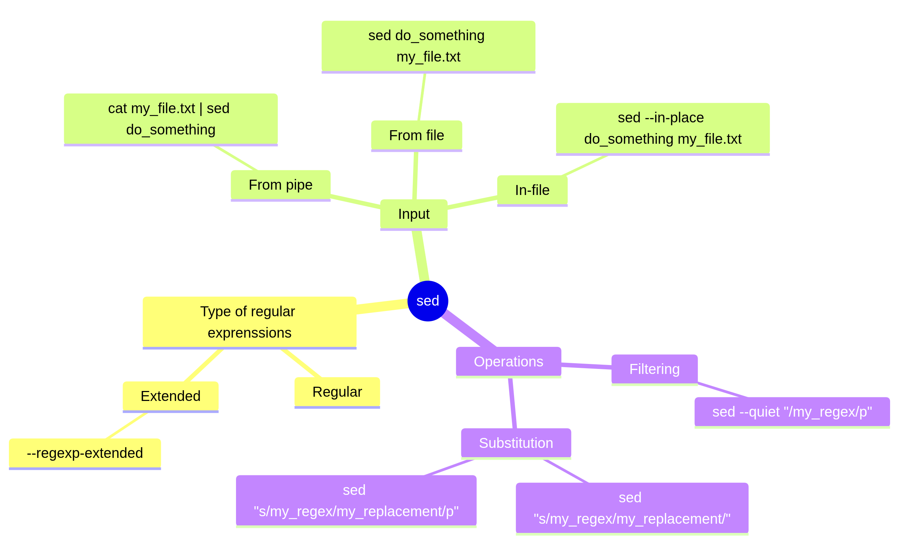
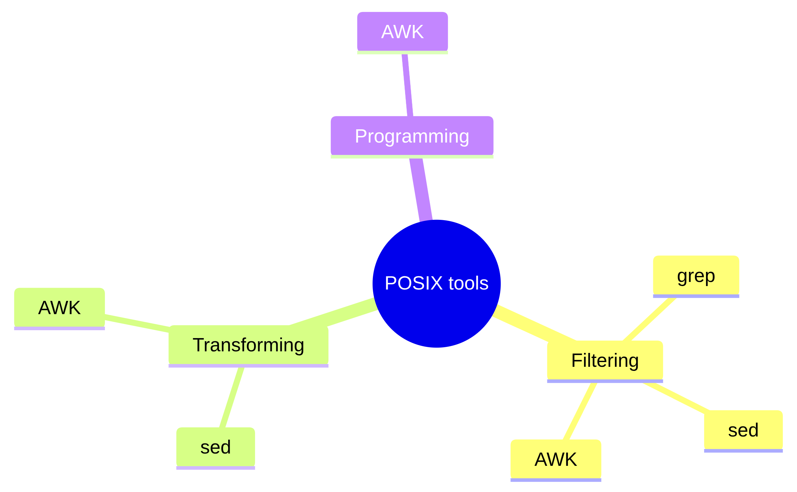

Using the sed stream editor¶
Prefer a video?
Learning outcomes
- Learners can use
sedto filter for lines using a regular expression - Learners can use
sedto replace lines using a regular expression - Learners can use
sedwith different types of input and output - Learners can use
sedwith the two different regular expression types - (optional) Learners have seen three
sedlearning resources
For teachers
Lesson plan:
| Time | Minutes | Duration | Description |
|---|---|---|---|
| 11:20-10:30 | 0-10 | 10 | Prior |
| 11:30-10:35 | 10-15 | 5 | Present |
| 11:35-10:55 | 15-35 | 20 | Challenge |
| 11:55-12:09 | 35-45 | 10 | Feedback and conclusion |
Prior:
- How to replace text with
grep? - What is
sed? sedis a stream editor. What would that mean?sedis also called ‘a non-interactive command-line text editor’. What would that mean?sedis a stream editor that can filter text. What would that mean?sedis a stream editor that can transform text. What would that mean?
1. Why use sed?¶
sed finds text that matches a regular expression and can replace it:
sed is among
the list of ‘Portable Operating System Interface’ (POSIX) commands,
which means it is considered a fundamental tool
and is likely to be available on your operating system.
sed (short for ‘stream editor’)
can do what grep can do and more:
it is ‘a non-interactive command-line text editor’
(source)
In this session, we will be manipulating a file from sed (instead of
doing so by hand).
2. Overview¶

3. Types of operations¶
3.1. Filtering¶
sed can do what grep can do.
For example, in the session aboutgrep,
we used the following command:
The equivalent sed command is this:
Are there synonyms for this sed command?
Yes, these commands are all equivalent:
man grep | sed --quiet "/^[A-Z]/p"
man grep | sed --silent "/^[A-Z]/p"
man grep | sed -n "/^[A-Z]/p"
In this session, --quiet is used, as it is felt to be
the most self-explanatory: to me, ‘quiet’ feels that it may
not be perfectly ‘silent’.
3.2. Replacing¶
Probably the most used feature of sed is its replacement
functionality:
The s is short for ‘substitute’. For example, the command
below substitutes ‘morning’ for ‘afternoon’.
If there may be multiple matches in a sentence, add g at the end:
4. Input and output¶
sed command |
Input and output |
|---|---|
cat my_input_file.txt | sed '...' |
Get input from a pipe, write output to terminal |
sed '...' my_input_file.txt |
Get input from a file, write output to terminal |
sed --in-place '...' my_file.txt |
:warning: Modify the file directly |
5. Type of regular expressions¶
There are two types of regular expressions
present in sed
according the sed manual:
basic and extended regular expressions.
Here is a quote from
the sed manual
regarding their differences:
In GNU sed, the only difference between basic and extended regular expressions is in the behavior of a few special characters:
?,+, parentheses, braces ({}), and|.
The difference can be shown using this text:
To select the countries, use:
cat lands.txt | sed --quiet '/[A-Z][a-z][a-z]*land/p'
cat lands.txt | sed --quiet --regexp-extended '/[A-Z][a-z]+land/p'
This line gives me the error unrecognized option '--quiet'
Some operating systems do not support the longer flag name
for less output (i.e. --quiet).
In that case, use the syntax below instead, which uses -n instead:
This teaching material used the longer writing, as this is easier to read.
This line gives me the error unrecognized option '--regexp-extended'
Some operating systems do not support the longer flag name
for using extended regular expressions (i.e. --regexp-extended) .
In that case, use the syntax below instead, which uses -E instead:
This teaching material used the longer writing, as this is easier to read.
Exercises¶
Exercise 1¶
Macbeth
In this exercise, we will work Macbeth, a tale written by William Shakespeare.
In these exercises, we will:
- Replace ‘Weird Sisters’ by ‘witches’: the text will be more clear
- Replace all country names by ‘Sweden’ (or your favorite country): the text may be funnier to read :-)
Exercise 1.1: download Macbeth¶
Download the file from a terminal as such:
wget https://raw.githubusercontent.com/UPPMAX/linux-command-line-102/refs/heads/main/docs/sessions/sed/macbeth.txt
Exercise 1.2: use sed to replace text from standard input¶
Read the ‘Replacing’ section.
In Macbeth, replace Weird Sisters (both words start with an upper-case
character) by witches. Do so by using cat on the file macbeth.txt,
then piping it to sed.
Answer
Here is how to show the text of Macbeth, with the text replaced:
There is no need to end with a g, as doing so (see command below) gives
identical results:
You can check in many ways that Weird Sisters only occurs once per
line. For example, the command below gives no matches:
Check that your replacement worked.
Tip
Pipe the output to grep to detect matches with witches
Answer
This gives the output:
How to save to a file?
You can redirect the output to a file using >, e.g.:
Exercise 1.3: use sed to find text from standard input¶
Read the ‘Filtering’ section.
In Macbeth, there are many place names ending on land.
Search for all place names ending on land using sed.
To be precise, search for all matches that:
- (1) start with an uppercase character
- (2) have zero or more lowercase characters
- (3) end on
land
Do so by using cat on the file macbeth.txt,
then piping it to sed.
Exercise 1.4: use extended regular expressions¶
Reading your answer in the previous exercise, your non-Swedish non-Finnish colleague comes to you and states that your regular expression makes no sense: your regular expression matches ‘Aland’, ‘Bland’, ‘Cland’ (and ‘Gland’), which can be improved upon.
Why is the colleague non-Swedish non-Finnish?
Because he/she does not know that Sweden has an island called Öland and Finland has an island called Åland.
Read the section ‘Type of regular expressions’.
Search for all place names ending on land using sed.
To be precise, search for all matches that:
- (1) start with an uppercase character
- (2) have one or more lowercase characters:
use a
+in your regular expression - (3) end on
land.
Answer
This is equivalent to the syntax below.
Exercise 1.5: use sed to replace text in a file¶
Until now, we never have touched the original file.
Here we use sed --in-place [commands] [filename]
to directly work on the original file.
Using sed directly on the file macbeth.txt,
replace Weird Sisters by witches
Using sed directly on the file macbeth.txt,
replace ‘lands’ by Sweden.
Answer
These are all valid answers:
Using sed directly on the file macbeth.txt,
to remove the copyright.
(optional) Exercise 1.6: Do this exercise from a script¶
Do this exercise from a script.
Answer
This is simply putting the answers in one file:
wget https://raw.githubusercontent.com/UPPMAX/linux-command-line-102/refs/heads/main/docs/sessions/sed/macbeth.txt
sed --in-place 's/Weird Sisters/witches/g' macbeth.txt
sed --in-place 's/[A-Z][a-z][a-z]*land/Sweden/' macbeth.txt
Optional is to add a shebang as the first line:
Optional is to remove macbeth.txt if it already exists before
downloading, as shown below. The --force makes sure that this
commands ‘works’ even
if the file is absent.
You can obtain this script by:
Summary
sedcan do whatgrepcan do and moresedis a ‘stream editor’ and also called ‘a non-interactive command-line text editor’sedcan use multiple combinations of input and outputsedcan do multiple operations, such as filtering and substitutingsedcan use two regular expression syntaxessedis not a programming language: use AWK instead
Overview of some POSIX tools

Overview of some POSIX tools